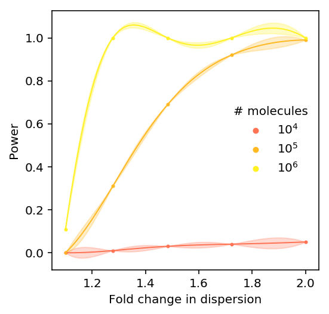

Power to detect QTLs in single cell data
Introduction
We previously found that our study lost power to detect eQTLs, and was underpowered to directly detect dispersion-QTLs.
Here, we estimate power to detect eQTLs and dispersion-QTLs as a function of:
- number of cells per individual
- number of molecules per cell
- number of individuals
Differential dispersion
Perform a nested model comparison for each gene \(k\), comparing the model:
\[ r_{ijk} \sim ZINB(\pi_{ik}, \mu_{ik}, \phi_{ik}) \]
against the model:
\[ r_{ijk} \sim ZINB(\pi_{ik}, \mu_{ik}, \phi_{i}) \]
def lrt(umi, onehot, design, size_factor): _, _, _, llik0 = fit( umi=umi.values.T.astype(np.float32), onehot=onehot.astype(np.float32), design=design.astype(np.float32), size_factor=size_factor.astype(np.float32), fit_null=True, return_llik=True, learning_rate=5e-2, max_epochs=4000) _, _, _, llik1 = fit( umi=umi.values.T.astype(np.float32), onehot=onehot.astype(np.float32), design=design.astype(np.float32), size_factor=size_factor.astype(np.float32), return_llik=True, learning_rate=5e-2, max_epochs=4000) T = 2 * (llik1 - llik0) return T, st.chi2(1).logsf(T)
Null calibration via parametric bootstrap
Sample null data from the model, using empirical estimates of the parameters in the observed data.
<<zinb-imports>> <<tf-imports>> <<tf-zinb-impl>> <<lrt-impl>> <<sim-impl>> log_mu = pd.read_table('/project2/mstephens/aksarkar/projects/singlecell-qtl/data/density-estimation/design1/zi2-log-mu.txt.gz', index_col=0, sep=' ') log_phi = pd.read_table('/project2/mstephens/aksarkar/projects/singlecell-qtl/data/density-estimation/design1/zi2-log-phi.txt.gz', index_col=0, sep=' ') logodds = pd.read_table('/project2/mstephens/aksarkar/projects/singlecell-qtl/data/density-estimation/design1/zi2-log-mu.txt.gz', index_col=0, sep=' ') params = pd.DataFrame({'log_mu': log_mu['NA18507'], 'log_phi': log_phi['NA18507'], 'logodds': logodds['NA18507']}, index=log_mu.index) params = params[params['log_mu'] > -10] n = 100 umi = pd.DataFrame([simulate(2 * n, size=1e5, log_mu=log_mu, log_phi=log_phi, logodds=logodds)[0][:,0] for _, (log_mu, log_phi, logodds) in params.iterrows() if log_mu > -10], index=params.index) onehot = np.zeros((2 * n, 2)) onehot[:n,0] = 1 onehot[n:,1] = 1 design = np.zeros((2 * n, 1)) size_factor = 1e5 * np.ones((2 * n, 1)) T, P = lrt(umi, onehot, design, size_factor) pd.DataFrame({'chi2': T, 'logp': P}, index=umi.index).to_csv('null-calibration-p.txt.gz', sep='\t', compression='gzip')
sbatch --partition=gpu --gres=gpu:1 --mem=16G --job-name=tf-lrt-null --output=tf-lrt-null-parametric.out #!/bin/bash source activate scqtl python /project2/mstephens/aksarkar/projects/singlecell-qtl/code/tf-lrt-null-parametric.py
Submitted batch job 46322399
Plot the QQ-plot.
null_lrt = pd.read_table('/scratch/midway2/aksarkar/singlecell/power/null-calibration-p.txt.gz') N = null_lrt.shape[0] plt.clf() plt.gcf().set_size_inches(4, 4) plt.scatter(st.chi2(1).ppf(np.linspace(0, 1 - 1 / N, N)), null_lrt['chi2'].sort_values(), c='k', s=2, alpha=0.25) lim = [0, 1.1 * null_lrt['chi2'].max()] plt.plot(lim, lim, c='r', ls=':', lw=1) plt.xlim(lim) plt.ylim(lim) plt.xlabel('Expected $\chi^2$ statistic') _ = plt.ylabel('Observed $\chi^2$ statistic')

Report how many genes were simulated.
N
1832
Power
Sample from the assumed model.
<<zinb-imports>> <<tf-imports>> <<tf-zinb-impl>> <<lrt-impl>> <<sim-impl>> log_mu = pd.read_table('/project2/mstephens/aksarkar/projects/singlecell-qtl/data/density-estimation/design1/zi2-log-mu.txt.gz', index_col=0, sep=' ') log_phi = pd.read_table('/project2/mstephens/aksarkar/projects/singlecell-qtl/data/density-estimation/design1/zi2-log-phi.txt.gz', index_col=0, sep=' ') logodds = pd.read_table('/project2/mstephens/aksarkar/projects/singlecell-qtl/data/density-estimation/design1/zi2-log-mu.txt.gz', index_col=0, sep=' ') params = pd.DataFrame({'log_mu': log_mu['NA18507'], 'log_phi': log_phi['NA18507'], 'logodds': logodds['NA18507']}, index=log_mu.index) params = params[params['log_mu'] > -10].sample(n=100) sample_sizes = np.array([100, 1000, 10000]) log_fold_changes = np.log(np.geomspace(1.1, 2, 5)) depths = np.array([1e4, 1e5, 1e6]) result = [] for num_mols in depths: for log_fc in log_fold_changes: for num_samples in sample_sizes: umi = [] for _, (log_mu, log_phi, logodds) in params.iterrows(): umi.append(np.hstack([ simulate(num_samples, size=num_mols, log_mu=log_mu, log_phi=log_phi, logodds=logodds)[0][:,0], simulate(num_samples, size=num_mols, log_mu=log_mu, log_phi=log_phi + log_fc, logodds=logodds)[0][:,0] ])) umi = pd.DataFrame(umi, index=params.index) onehot = np.zeros((umi.shape[1], 2)) onehot[:num_samples,0] = 1 onehot[num_samples:,1] = 1 design = np.zeros((umi.shape[1], 1)) size_factor = num_mols * np.ones((umi.shape[1], 1)) T, P = lrt(umi, onehot, design, size_factor) result.append(pd.DataFrame({ 'num_mols': num_mols, 'num_samples': num_samples, 'log_fold_change': log_fc, 'chi2': T, 'logp': P})) pd.concat(result).to_csv('lrt-power.txt.gz', sep='\t', compression='gzip')
sbatch --partition=gpu --gres=gpu:1 --mem=16G --job-name=tf-lrt-power --output=tf-lrt-power.out #!/bin/bash source activate scqtl python /project2/mstephens/aksarkar/projects/singlecell-qtl/code/tf-lrt-power.py
Submitted batch job 46358533
Read the results.
lrt_power = (pd.read_table('/project2/mstephens/aksarkar/projects/singlecell-qtl/data/power/lrt-power.txt.gz', index_col=0) .reindex() .groupby(['num_mols', 'num_samples', 'log_fold_change']) .apply(lambda x: (np.exp(x['logp']) < 0.05).sum() / x.shape[0]) .to_frame() .reset_index())
lrt_power.head()
num_mols num_samples log_fold_change 0 0 10000.0 100 0.095310 0.00 1 10000.0 100 0.244769 0.00 2 10000.0 100 0.394229 0.00 3 10000.0 100 0.543688 0.00 4 10000.0 100 0.693147 0.01
Fit a GP to the results.
f = (skgp.GaussianProcessRegressor(kernel=skgp.kernels.RBF(), n_restarts_optimizer=10) .fit(lrt_power.loc[:,['num_mols', 'num_samples', 'log_fold_change']], lrt_power.loc[:,0]))
Plot the results.
plt.clf() plt.gcf().set_size_inches(4, 4) grid = np.log(np.linspace(1.1, 2, 100)) for n in sorted(set(lrt_power['num_samples'])): color = colorcet.cm['inferno'](np.log(n) / np.log(lrt_power['num_samples'].max())) subset = lrt_power[np.logical_and(lrt_power['num_mols'] == 10000, lrt_power['num_samples'] == n)] plt.scatter(np.exp(subset['log_fold_change']), subset[0], s=3, c=color, label=n) post_mean, post_std = f.predict(np.vstack([10000 * np.ones(100), n * np.ones(100), grid]).T, return_std=True) plt.plot(np.exp(grid), post_mean, color=color) plt.fill_between(np.exp(grid), post_mean - 1.96 * post_std, post_mean + 1.96 * post_std, color=color, alpha=0.25) plt.legend(title='# samples', frameon=False, markerscale=2) plt.xlabel('Fold change in dispersion') plt.ylabel('Power')
Text(0,0.5,'Power')

plt.clf() plt.gcf().set_size_inches(4, 4) grid = np.log(np.linspace(1.1, 2, 100)) for n in sorted(set(lrt_power['num_mols'])): color = colorcet.cm['inferno'](np.log(n) / np.log(lrt_power['num_mols'].max())) subset = lrt_power[np.logical_and(lrt_power['num_mols'] == n, lrt_power['num_samples'] == 1000)] plt.scatter(np.exp(subset['log_fold_change']), subset[0], s=4, c=color, label='$10^{:.0f}$'.format(np.log(n) / np.log(10))) post_mean, post_std = f.predict(np.vstack([n * np.ones(100), 1000 * np.ones(100), grid]).T, return_std=True) plt.plot(np.exp(grid), post_mean, color=color, lw=1) plt.fill_between(np.exp(grid), post_mean - 1.96 * post_std, post_mean + 1.96 * post_std, color=color, alpha=0.25) plt.legend(title='# molecules', frameon=False, markerscale=2) plt.xlabel('Fold change in dispersion') plt.ylabel('Power')
Text(0,0.5,'Power')

eQTL discovery
We assume expression is generated from \(m\) causal effects (out of \(p\) variants) following a linear model:
\[ \ln\mu = \mathbf{X} \bm{\beta} + \bm{\epsilon} \]
\[ \mathbb{E}[x_i] = 0, \mathbb{V}[x_i] = 1 \]
\[ \bm{\beta} \sim (1 - \frac{m}{p}) \delta_0 + \frac{m}{p} N(0, \sigma^2_g / m) \]
\[ \bm{\epsilon} \sim N(0, \sigma^2_e) \]
The key insight is that the single cell experiment size changes the standard error of the mean estimator.
\[ \ln{\hat\mu} \sim N(\ln\mu, \sigma^2) \]
We estimate the standard error as a function of the experiment size from the simulation.
Dispersion-QTL discovery
We assume dispersions are generated from \(m\) causal effects following a linear model:
\[ \ln{\hat\phi} \sim N(\mathbf{X} \bm{\beta}, \sigma^2_e + \sigma^2) \]